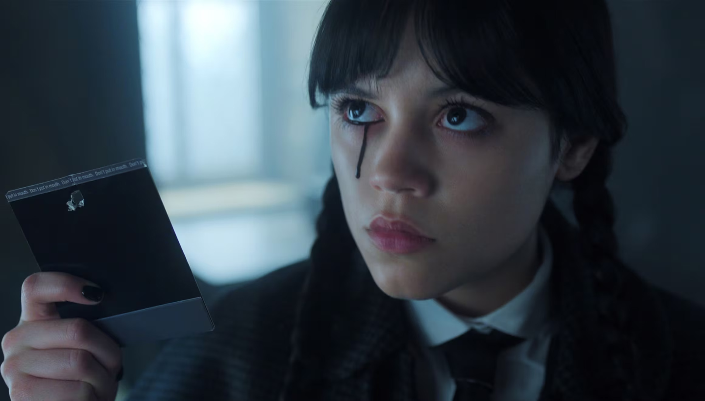
Hija de Morticia y Gómez, estudiante de Nevermore. Inteligente, sarcástica y con una mente brillante para resolver misterios.
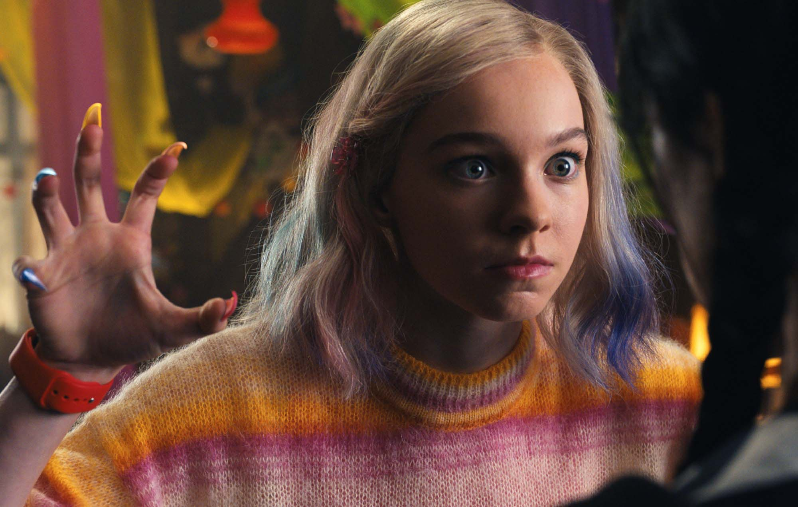
Compañera de cuarto de Merlina en Nevermore. Alegre, optimista y el contrapunto luminoso del mundo gótico que la rodea.
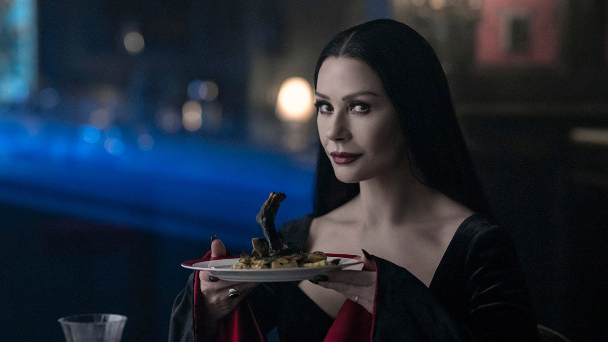
Madre de Merlina y matriarca de la familia Addams. Elegante, serena y con una fascinación natural por lo oscuro.
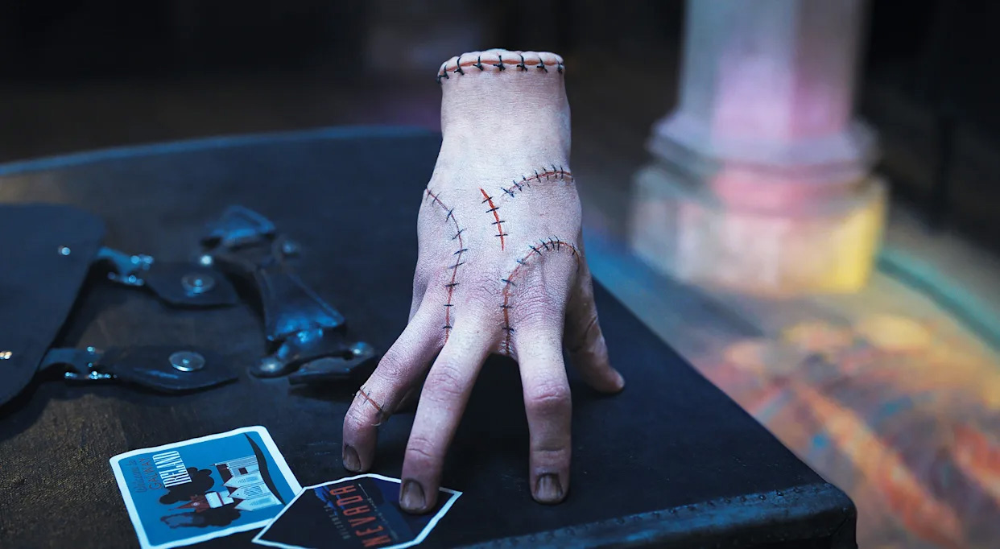
Sirviente y amigo leal de los Addams. Ingenioso, expresivo y siempre dispuesto a ayudar con una mano.
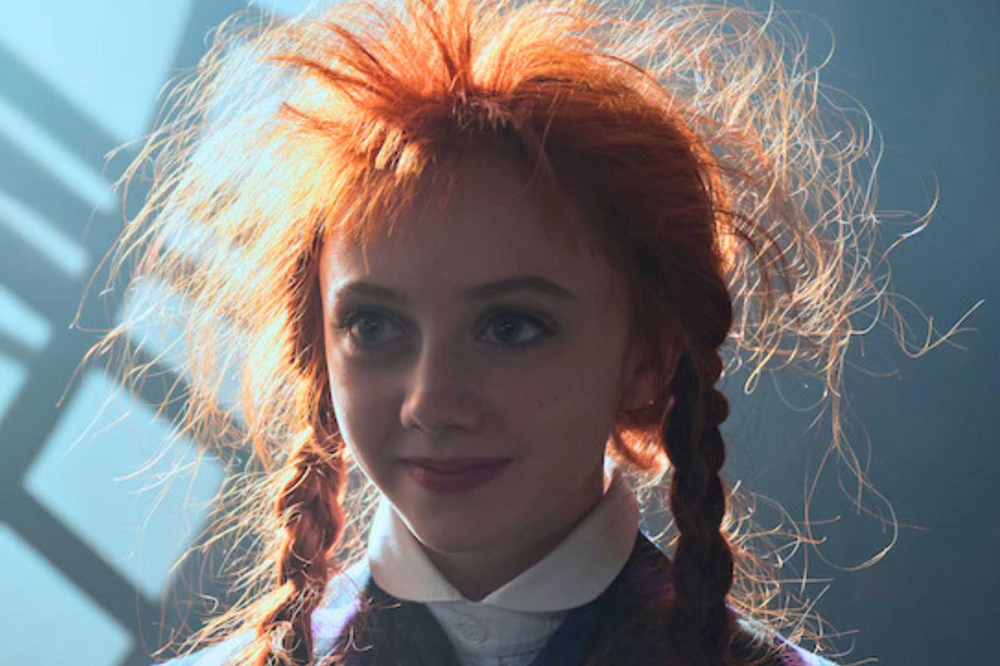
Estudiante y amiga de Merlina. Puede volverse invisible. Tímida, curiosa y usa su habilidad para espiar o escapar.
Hijo del sheriff de Jericho y amigo de Merlina. Carismático, enigmático y con un pasado que esconde secretos.
by Tomi Caruso 26 OCT 2025
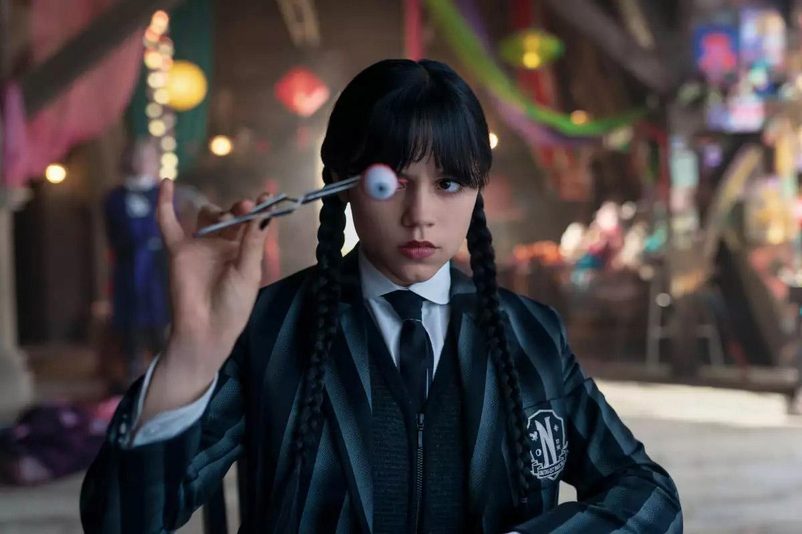
Tras los sucesos de la primera temporada, Merlina regresa a la Academia Nevermore decidida a concentrarse en sus estudios y evitar nuevos dramas. Sin embargo, pronto descubre que el ambiente en la escuela ha cambiado: un nuevo director impone reglas rígidas y hay una sensación constante de que algo oscuro se esconde entre los pasillos.
A medida que investiga, la joven descubre rastros de una antigua sociedad secreta ligada al pasado de Nevermore y a su propia familia. Sus intentos por desenmascarar la verdad la enfrentan con sus compañeros y con sus propios límites. La desconfianza crece, los lazos se tensan, y el humor ácido que la caracteriza se convierte en su mejor defensa frente a lo desconocido.
La temporada explora un costado más íntimo de Merlina, mostrando las grietas detrás de su aparente frialdad. Enid, siempre optimista, sigue siendo su contrapunto y su cable a tierra, mientras nuevos personajes irrumpen con intenciones ambiguas. Entre rituales, secretos y visiones del pasado, Merlina se ve forzada a preguntarse qué tanto de su destino está bajo su control.
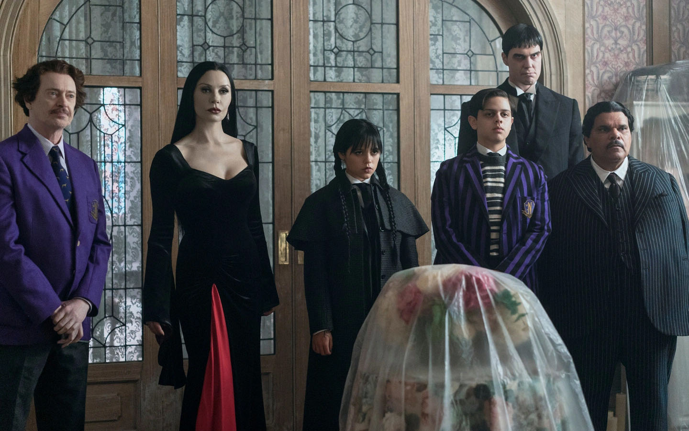
Cuando una serie de fenómenos sobrenaturales sacude Nevermore, Merlina descubre que la amenaza que los acecha está ligada a una maldición que pesa sobre su familia. Su búsqueda de respuestas la conduce a un territorio peligroso, donde la línea entre la lógica y la locura se vuelve difusa.
Mientras intenta mantener su independencia, Merlina comienza a comprender que no todo puede resolverse con inteligencia o sarcasmo. Los vínculos que ha formado se vuelven su mayor fortaleza, aunque también su mayor vulnerabilidad. Enfrentarse a la oscuridad implica reconocer que no todo monstruo es externo: algunos habitan dentro de uno mismo.
El final de temporada deja un sabor agridulce: algunos misterios se resuelven, otros apenas comienzan. Pero lo que queda claro es que Merlina ha cambiado. Sigue siendo la mente brillante y sarcástica que todos temen y admiran, aunque ahora carga con un conocimiento más profundo y más peligroso sobre quién es realmente.
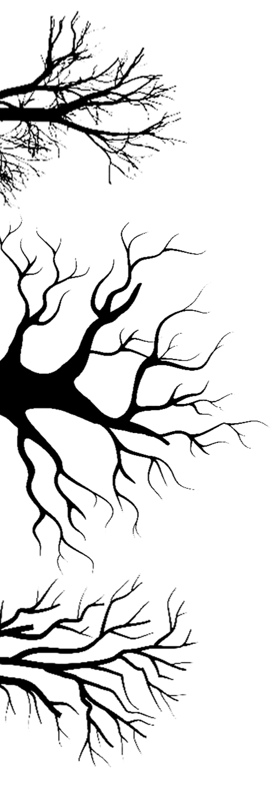
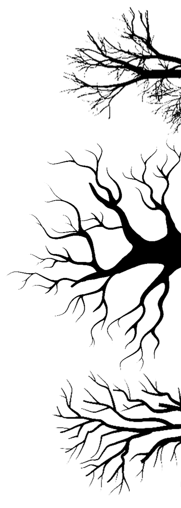
Mira el tráiler oficial
Sin spoilers sobre la temporada 2 de Merlina
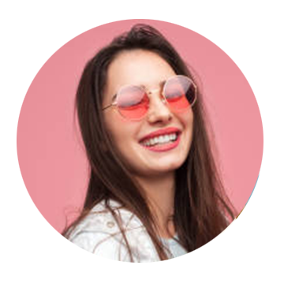
Fan Oficial
Una segunda temporada que mantiene el tono gótico y detective de la primera, pero acelera el ritmo con nuevos misterios y giros que profundizan tanto en los personajes como en sus conflictos sobrenaturales, entre otros mas.
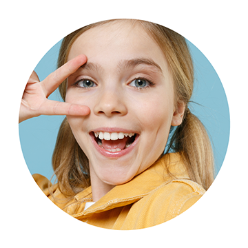
Newbie
Si bien algunos elementos pueden sentirse familiares, la temporada se atreve a ampliar el universo y plantea preguntas más complejas, dejando parada una nueva dirección que promete mayor riesgo en futuras entregas.
Fan Leal
El elenco continúa brillando, con una protagonista cuya evolución personal se refleja en una trama que mezcla amenazas externas e internas; la atmósfera oscura-humorada sigue siendo un gran atractivo.